My Projects
NeuroKit
NeuroKit is a Python package designed to simplify the process of building neural networks using just NumPy. It offers a Keras-like interface with essential features such as various activation functions, loss functions, metrics, optimizers, and early stopping mechanisms. This package aims to provide a clear tool for using neural network and is continuously being enhanced with additional functionalities.
Machine Learning 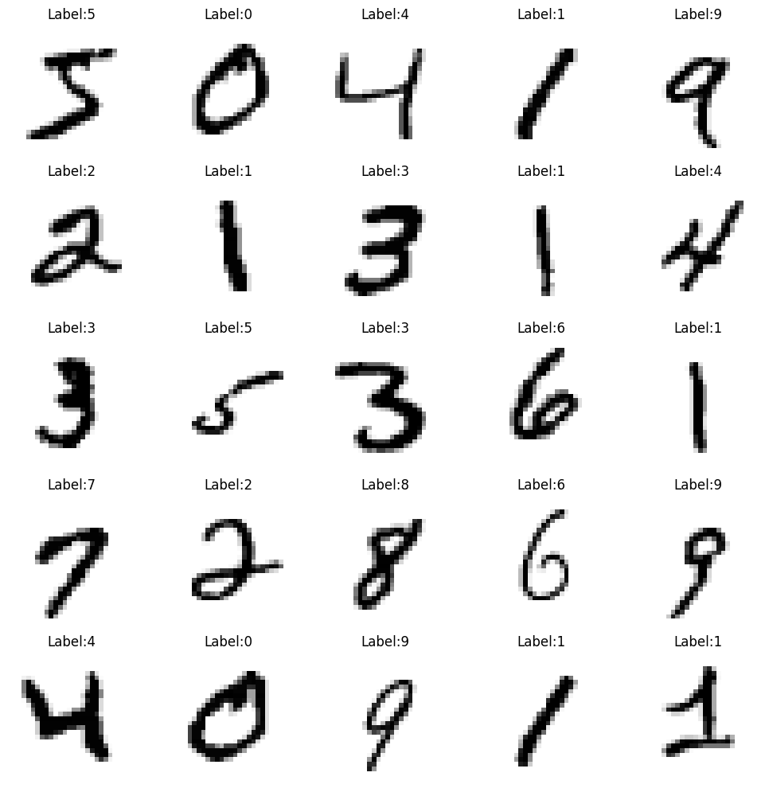MNIST dataset prediction
Used MNIST dataset to train a neural network for handwritten digit recognition. Used convolutional neural networks to achieve better accuracy and compared the results with different models. The model scored 99,55% accuracy on test dataset.
Data Science 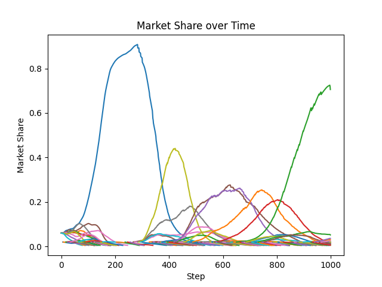Market Modeling with ABM
I researched the effect of innovation on market share distribution using an agent-based model based on replicator dynamics. I incorporated finite demand to model market saturation. The study tested three hypotheses regarding firm lifecycle, the impact of innovation on market share in saturated markets, and innovation's effect on market composition.
Programming 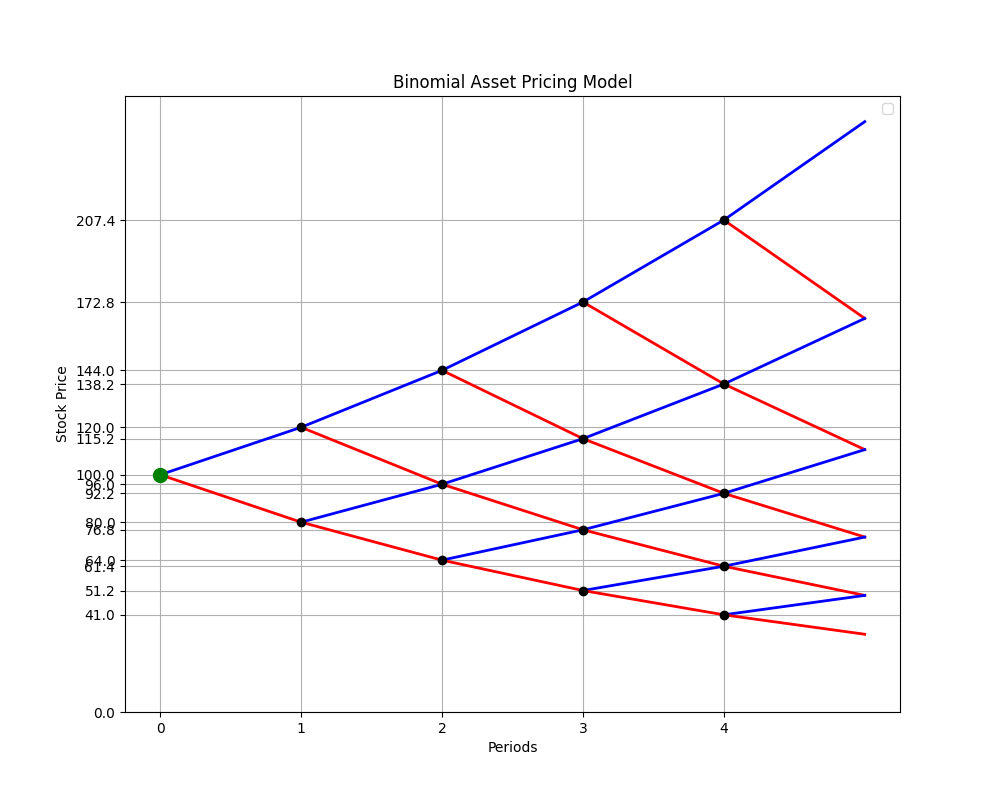Binomial Option Pricing
Developed a comprehensive financial modeling tool using the Cox-Ross-Rubinstein (CRR) binomial tree model to accurately price complex derivative instruments. The tool leverages the CRR model to accommodate the unique features of each option type, such as the path-dependence of barrier options, the choice embedded in chooser options, and the asset substitution of exchangeable options.
Finance 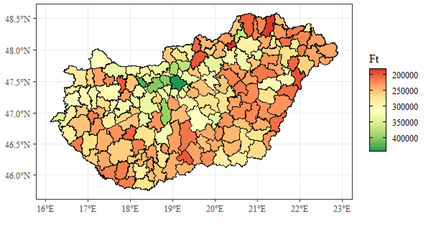Analysis of Wage Gaps by Firm Ownership
Co-authored a research paper for Scientific Students’ Association Conference, where it secured third place in Statistics and Econometrics Section. The study analyzed the wage gaps by foreign and domestic ownership and its spatial effects in Hungary. We used Blinder-Oaxaca decomposition and spatial models in examining domestic wages aiming to analyze wage inequality and decompose wage differences.
Data Science 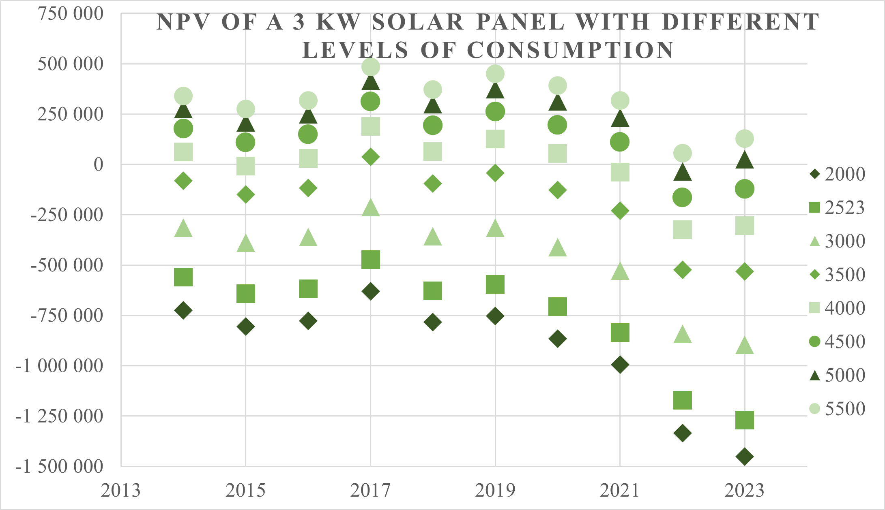Analysis of Wage Gaps by Firm Ownership
Co-authored a research paper for Scientific Students’ Association Conference, where it got into the oral round in Energy Management Section. The research focused on the economic return of residential solar systems in the new legislative environment of year 2022. The study aimed to model the impact of legislative changes regarding solar panels on economic returns, utilizing a comprehensive modeling framework.
Data Science 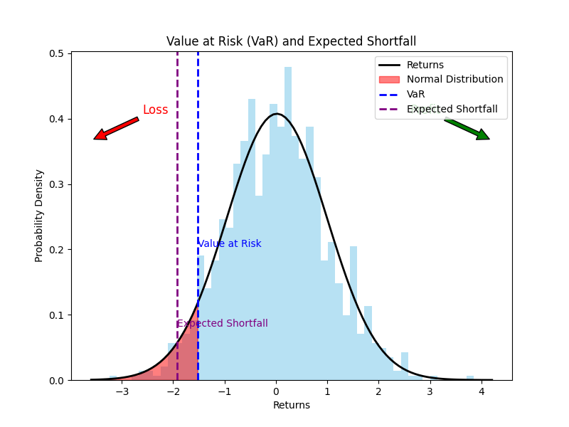Value-at-Risk Modeling
I have developed a ready-to-use Value-at-Risk (VaR) and cVaR models using historical market data to estimate the potential loss in a stock or portfolio with Monte Carlo simulation.
Finance 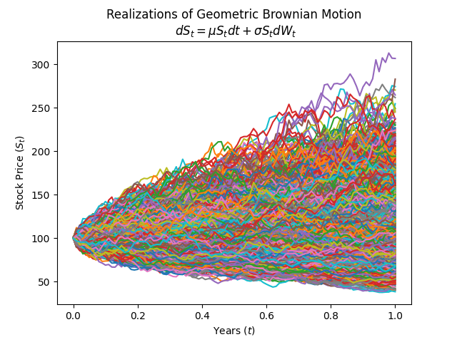Option Pricing with MC simulation
Implemented a robust option pricing framework utilizing Monte Carlo simulation to accurately value complex derivatives. This project involved modeling the stochastic processes underlying asset prices and simulating numerous potential future price paths to estimate the expected payoff of these exotic options.
Finance 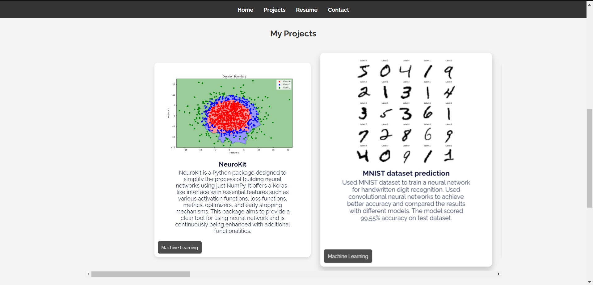WebDev: My website
For my first web development project, I created a website designed to showcase and highlight various projects. The site features a clean, user-friendly interface with detailed descriptions and visual elements for each project, making it easy for visitors to explore and understand the work. This project served as a practical introduction to web development, focusing on design, layout, and functionality to effectively present my portfolio.
Programming 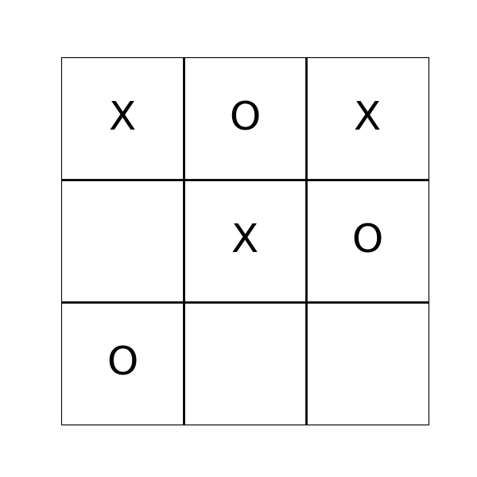Teaching AI to play TicTacToe
Implemented a Deep Reinforcement Learning (DRL) framework to play Tic-Tac-Toe, using a Deep Q-Network (DQN) to train agents that learn to play the game autonomously. The project involves constructing a neural network to approximate the Q-values for each possible action, guiding the agent's decisions to maximize cumulative rewards.
Machine Learning 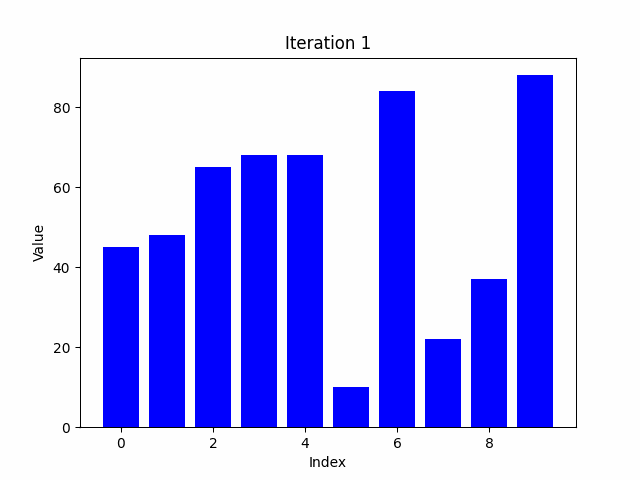Visualising sorting algorithms
Developed an interactive visualization of key sorting algorithms using Pygame. This project offers a dynamic and engaging way to understand how algorithms like Bubble Sort operate. By animating the sorting process, users can visually follow each step and swap, making complex sorting mechanisms more accessible and easier to grasp.
Programming 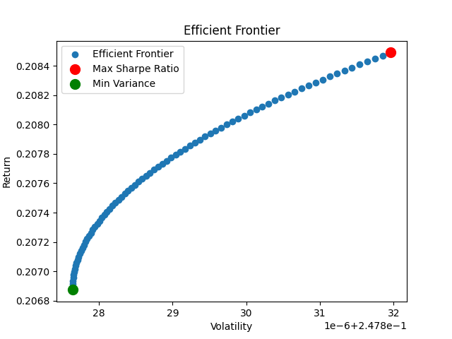Application of Portfolio Theory
This project simulates the efficient frontier of a stock portfolio, which represents the best possible returns for a given level of risk. By analyzing historical stock data, it helps identify the most effective portfolio combinations that maximize returns while minimizing risk. The simulation highlights portfolios that offer the best trade-off between risk and return, and visualizes these optimal choices on a graph.
Finance 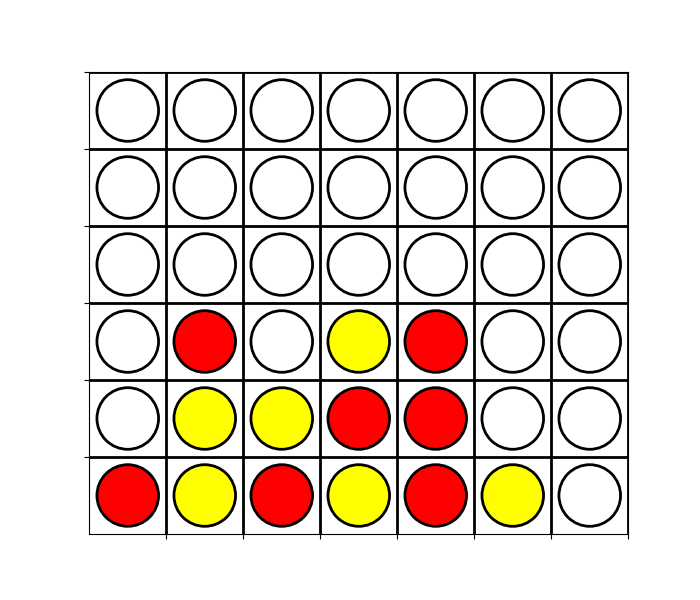Application of minimax algorithm
Developed AI opponents for Tic-Tac-Toe and Connect4 using the Minimax algorithm. The AI evaluates all possible moves, and picks the best option to win or block the opponent. This implementation demonstrates the practical application of decision-making algorithms.
Machine Learning 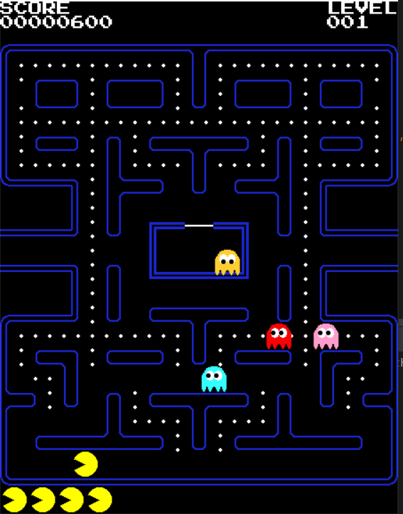PacMan: The game
Through this project, i was able to learn the fundamentals of OOP and develop my first ever fully functional graphical game in Pygame. The game is aims to be a replica of the original PacMan and heavily relies on Pacmancode's tutorial.
Programming
You can find my other projects and full codes on my GitHub page!